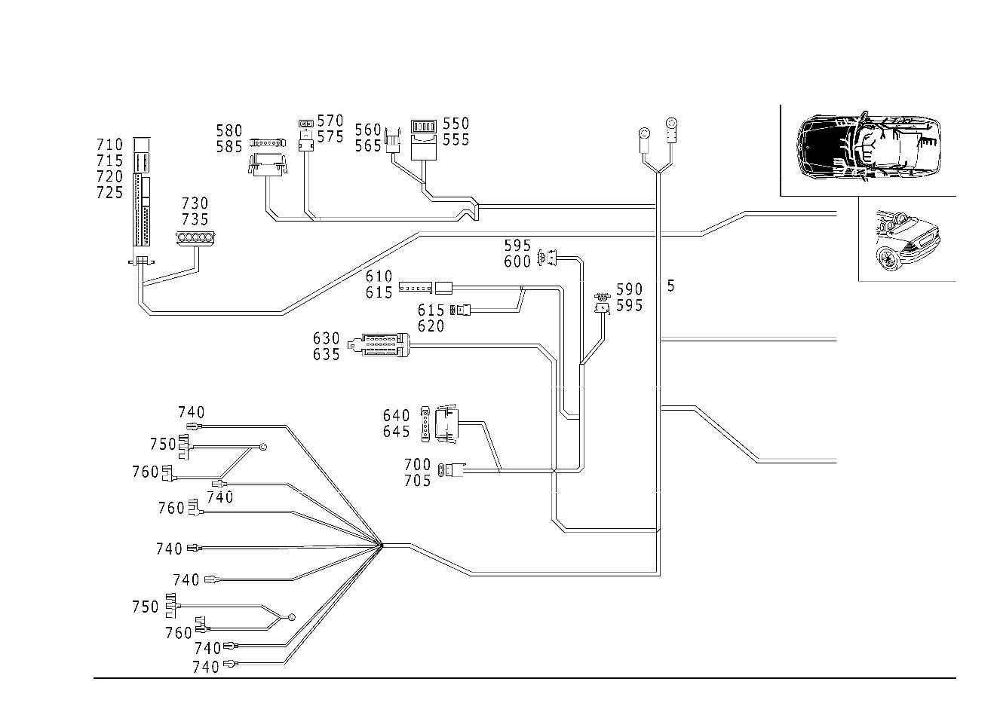

| № | Артикул | Название | Кол. | Примечание | Ограничение |
|---|---|---|---|---|---|
| 5 | A 170 540 86 07 | ЖГУТ ЭЛ.-ПРОВОДКИ | 1 | ЖГУТ ПРОВОДКИ ЗАДН. ФОНАРЯ Рулевое управление: Влево | M112 |
| 5 | A 170 540 09 09 | Жгут электропроводки (LEITUNGSSATZ) | 1 | ЖГУТ ПРОВОДКИ ЗАДН. ФОНАРЯ Рулевое управление: Влево | M112 |
| 5 | A 170 540 87 07 | ЖГУТ ЭЛ.-ПРОВОДКИ | 1 | ЖГУТ ПРОВОДКИ ЗАДН. ФОНАРЯ Рулевое управление: Влево | M112+423 |
| 5 | A 170 540 11 09 | Жгут электропроводки | 1 | ЖГУТ ПРОВОДКИ ЗАДН. ФОНАРЯ Рулевое управление: Влево [001409] ДО ИДЕНТ. № F298214, КОД ДЕТАЛИ ЗАКАЗЫВАТЬ БЕЗ РАСШИРЕНИЯ ES1 [001410] НАЧИНАЯ С ИДЕНТ. НОМЕРА F298215, ЗАКАЗЫВАТЬ № ДЕТАЛИ С ES1 98 | M112+423 |
| 5 | A 170 540 92 07 | ЖГУТ ЭЛ.-ПРОВОДКИ | 1 | ЖГУТ ПРОВОДКИ ЗАДН. ФОНАРЯ Рулевое управление: Вправо | M112+423 |
| 5 | A 170 540 20 09 | Электрический жгут | 1 | ЖГУТ ПРОВОДКИ ЗАДН. ФОНАРЯ Рулевое управление: Вправо [402] БОЛЬШЕ НЕ ПОСТАВЛЯЕТСЯ | M112+423 |
| 5 | A 170 540 91 07 | ЖГУТ ЭЛ.-ПРОВОДКИ | 1 | ЖГУТ ПРОВОДКИ ЗАДН. ФОНАРЕЙ Рулевое управление: Вправо | M112 |
| 5 | A 170 540 10 09 | Жгут электропроводки (LEITUNGSSATZ) | 1 | ЖГУТ ПРОВОДКИ ЗАДН. ФОНАРЯ Рулевое управление: Вправо | M112 |
| 10 | A 000 540 12 05 | - Жгут электропроводки | 2 | НАТЯЖИТЕЛЬ РЕМНЯ [622] ПРИ ЗАКАЗЕ УКАЗАТЬ ИДЕНТ.№ | |
| 10 | A 000 540 13 05 | - РЕМКОМПЛЕКТ | 2 | БОКОВАЯ ПОДУШКА БЕЗОП.; 2\-PIN [622] ПРИ ЗАКАЗЕ УКАЗАТЬ ИДЕНТ.№ | |
| 50 | A 210 545 65 28 | - Штекер (STECKER) | 1 | БЛОК ПРАВЫХ ЗАДНИХ ФОНАРЕЙ; 6\-PIN | |
| 55 | A 000 540 27 05 | - Электрический провод (ELEKTRISCHE LEITUNG) | NB | 0.5\-1.00 MM2 JPT [T774] СОЕДИНИТЕЛИ СЛЕДУЕТ ЗАКАЗЫВАТЬ В СООТВЕТСТВИИ С ОБЩИМ ПОПЕРЕЧНЫМ СЕЧЕНИЕМ СОЕДИНЯЕМЫХ ПРОВОДОВРУКОВОДСТВО ПО РЕМОНТУ СМ. WIS. | |
| 60 | A 012 545 86 28 | - Корпус штекерной втулки (STECKHUELSENGEHAEUSE) | 1 | КРЫШКА БАГАЖНИКА; 2\-PIN RK2.5 | |
| 65 | A 003 545 06 26 | - Контактная втулка (KONTAKTBUCHSE) | NB | 0.35\-2.5 MM2 RK2.5 | |
| 70 | A 014 545 01 28 | - Корпус штекерной втулки (STECKHUELSENGEHAEUSE) | 1 | КРЫШКА БАГАЖНИКА; 2\-PIN | |
| 75 | A 002 545 99 26 | - Контактная втулка (KONTAKTBUCHSE) | NB | 0.35\-2.5 MM2 RK2.5 | |
| 80 | A 029 545 25 28 | - Штекер (STECKER) | 1 | МЕСТО РАЗЪЕДИНЕНИЯ НА КРЫШКЕ БАГАЖНИКА; 8\-PIN | |
| 85 | A 033 545 19 28 | - Контактный стержень (KONTAKTSTIFT) | NB | 0.5\-1.0 MM2 RK2.5 | |
| 90 | A 028 545 39 28 | - Корпус штекерной втулки (STECKHUELSENGEHAEUSE) | 1 | ПНЕВМАТ. МОДУЛЬ УПРАВЛ.; 4\-PIN SPT | |
| 95 | A 004 545 52 26 | - Контактная пружина (KONTAKTFEDER) | NB | 1.0\-2.5 MM2 SPT | |
| 95 | A 004 545 00 26 | - Контактная втулка (KONTAKTBUCHSE) | NB | 2.5\-4.0 MM2 SPT | |
| 100 | A 210 540 32 81 | - Сцепление, механическое | 1 | ПНЕВМАТ. МОДУЛЬ УПРАВЛ.; 18 POLIG | |
| 100 | A 001 545 48 40 | - Корпус штекерной втулки (STECKHUELSENGEHAEUSE) | 1 | ПНЕВМАТ. МОДУЛЬ УПРАВЛ.; 18\-PIN MQS | |
| 105 | A 000 540 45 05 | - Электрический провод (ELEKTRISCHE LEITUNG) | NB | 0.5 MM2 MQS SN [T774] СОЕДИНИТЕЛИ СЛЕДУЕТ ЗАКАЗЫВАТЬ В СООТВЕТСТВИИ С ОБЩИМ ПОПЕРЕЧНЫМ СЕЧЕНИЕМ СОЕДИНЯЕМЫХ ПРОВОДОВРУКОВОДСТВО ПО РЕМОНТУ СМ. WIS. | |
| 110 | A 210 545 65 28 | - Штекер (STECKER) | 1 | БЛОК ЛЕВЫХ ЗАДНИХ ФОНАРЕЙ; 6\-PIN | |
| 115 | A 000 540 27 05 | - Электрический провод (ELEKTRISCHE LEITUNG) | NB | 0.5\-1.00 MM2 JPT [T774] СОЕДИНИТЕЛИ СЛЕДУЕТ ЗАКАЗЫВАТЬ В СООТВЕТСТВИИ С ОБЩИМ ПОПЕРЕЧНЫМ СЕЧЕНИЕМ СОЕДИНЯЕМЫХ ПРОВОДОВРУКОВОДСТВО ПО РЕМОНТУ СМ. WIS. | |
| 120 | A 029 545 55 28 | - Корпус штекерной втулки (STECKHUELSENGEHAEUSE) | 1 | КРЫШКА БАГАЖНИКА, СПРАВА; 3\-PIN MQS | |
| 125 | A 000 540 45 05 | - Электрический провод (ELEKTRISCHE LEITUNG) | NB | 0.5 MM2 MQS SN [T774] СОЕДИНИТЕЛИ СЛЕДУЕТ ЗАКАЗЫВАТЬ В СООТВЕТСТВИИ С ОБЩИМ ПОПЕРЕЧНЫМ СЕЧЕНИЕМ СОЕДИНЯЕМЫХ ПРОВОДОВРУКОВОДСТВО ПО РЕМОНТУ СМ. WIS. | |
| 130 | A 029 545 19 28 | - Сцепление, механическое (KUPPLUNG, MECHANISCH) | 1 | ПРИВОД СКЛАДН. КРЫШИ; 8\-PIN RK2.5 | |
| 135 | A 009 545 28 26 | - Контактная втулка (KONTAKTBUCHSE) | NB | 0.5\-1.0 MM2 RK2.5 | |
| 135 | A 009 545 30 26 | - Контактная втулка (KONTAKTBUCHSE) | NB | 2.6\-4.0 MM2 RK2.5 [402] БОЛЬШЕ НЕ ПОСТАВЛЯЕТСЯ | |
| 140 | A 000 546 11 45 | - Изоляционная втулка (ISOLIERHUELSE) | 1 | ПЛАФОН ОСВЕЩЕНИЯ БАГАЖНИКА; FF6.3 | |
| 145 | A 000 546 83 40 | - Штекерная втулка (STECKHUELSE) | NB | ПЛАФОН ОСВЕЩЕНИЯ БАГАЖНИКА; 0.5\-1.0 MM2 FF6.3 | |
| 150 | A 029 545 55 28 | - Корпус штекерной втулки (STECKHUELSENGEHAEUSE) | 1 | КРЫШКА БАГАЖНИКА, СЛЕВА; 3\-PIN MQS | |
| 155 | A 000 540 45 05 | - Электрический провод (ELEKTRISCHE LEITUNG) | NB | 0.5 MM2 MQS SN [T774] СОЕДИНИТЕЛИ СЛЕДУЕТ ЗАКАЗЫВАТЬ В СООТВЕТСТВИИ С ОБЩИМ ПОПЕРЕЧНЫМ СЕЧЕНИЕМ СОЕДИНЯЕМЫХ ПРОВОДОВРУКОВОДСТВО ПО РЕМОНТУ СМ. WIS. | |
| 160 | A 031 545 60 28 | - Корпус штекера (STECKERGEHAEUSE) | 1 | РАЗЪЕМ СКЛАДН. КРЫШИ; 2\-PIN | |
| 165 | A 033 545 19 28 | - Контактный стержень (KONTAKTSTIFT) | NB | 0.5\-1.0 MM2 RK2.5 | |
| 170 | A 031 545 59 28 | - Корпус штекера (STECKERGEHAEUSE) | 1 | РАЗЪЕМ ОБОГРЕВ. ЗАДН. СТЕКЛА; 2\-PIN | |
| 175 | A 033 545 20 28 | - Контактный стержень (KONTAKTSTIFT) | NB | 1.1\-2.5 MM2 RK2.5 | |
| 180 | A 012 545 86 28 | - Корпус штекерной втулки (STECKHUELSENGEHAEUSE) | 1 | ДАТЧИК ОБОРОТОВ; 2\-PIN RK2.5 | |
| 185 | A 003 545 06 26 | - Контактная втулка (KONTAKTBUCHSE) | NB | 0.35\-2.5 MM2 RK2.5 | |
| 190 | A 012 545 86 28 | - Корпус штекерной втулки (STECKHUELSENGEHAEUSE) | 1 | РАЗЪЕМ ТАХОМЕТРА; 2\-PIN RK2.5 | |
| 195 | A 003 545 06 26 | - Контактная втулка (KONTAKTBUCHSE) | NB | 0.35\-2.5 MM2 RK2.5 | |
| 200 | A 031 545 32 28 | - Корпус штекера (STECKERGEHAEUSE) | 1 | УКАЗАТЕЛЬ УРОВНЯ ТОПЛИВА; 2\-PIN JPT2.8 | |
| 205 | A 000 540 27 05 | - Электрический провод (ELEKTRISCHE LEITUNG) | NB | 0.5\-1.00 MM2 JPT [T774] СОЕДИНИТЕЛИ СЛЕДУЕТ ЗАКАЗЫВАТЬ В СООТВЕТСТВИИ С ОБЩИМ ПОПЕРЕЧНЫМ СЕЧЕНИЕМ СОЕДИНЯЕМЫХ ПРОВОДОВРУКОВОДСТВО ПО РЕМОНТУ СМ. WIS. | |
| 210 | A 012 545 86 28 | - Корпус штекерной втулки (STECKHUELSENGEHAEUSE) | 1 | КОНЦЕВ. ВЫКЛ\-ТЕЛЬ КРЫША VARIO "РАСКРЫТА"; 2\-PIN RK2.5 | |
| 215 | A 003 545 06 26 | - Контактная втулка (KONTAKTBUCHSE) | NB | 0.35\-2.5 MM2 RK2.5 | |
| 220 | A 033 545 00 28 | - Корпус штекерной втулки (STECKHUELSENGEHAEUSE) | 1 | РЕГУЛИР. СИД. ПЕРЕДН. ПАСС.; 4\-PIN MQS | |
| 225 | A 000 540 45 05 | - Электрический провод (ELEKTRISCHE LEITUNG) | NB | 0.5 MM2 MQS SN [T774] СОЕДИНИТЕЛИ СЛЕДУЕТ ЗАКАЗЫВАТЬ В СООТВЕТСТВИИ С ОБЩИМ ПОПЕРЕЧНЫМ СЕЧЕНИЕМ СОЕДИНЯЕМЫХ ПРОВОДОВРУКОВОДСТВО ПО РЕМОНТУ СМ. WIS. | |
| 230 | A 030 545 76 28 | - Штекер (STECKER) | 1 | БОКОВАЯ ПОДУШКА БЕЗОП.; 3 PIN | |
| 235 | A 000 540 47 05 | - Электрический провод (ELEKTRISCHE LEITUNG) | NB | 0.5 MM2 MQS [T774] СОЕДИНИТЕЛИ СЛЕДУЕТ ЗАКАЗЫВАТЬ В СООТВЕТСТВИИ С ОБЩИМ ПОПЕРЕЧНЫМ СЕЧЕНИЕМ СОЕДИНЯЕМЫХ ПРОВОДОВРУКОВОДСТВО ПО РЕМОНТУ СМ. WIS. | |
| 240 | A 012 545 71 26 | - Штекерная втулка (STECKHUELSE) | 1 | КОНТАКТН.ВЫКЛ.ДВЕРИ СПРАВА; 3\-PIN | |
| 245 | A 000 540 40 05 | - Электрический провод (ELEKTRISCHE LEITUNG) | NB | 2.5 MM2 SLK2.8 [T774] СОЕДИНИТЕЛИ СЛЕДУЕТ ЗАКАЗЫВАТЬ В СООТВЕТСТВИИ С ОБЩИМ ПОПЕРЕЧНЫМ СЕЧЕНИЕМ СОЕДИНЯЕМЫХ ПРОВОДОВРУКОВОДСТВО ПО РЕМОНТУ СМ. WIS. | |
| 250 | A 008 545 08 28 | - Корпус штекерной втулки | 1 | ДВИГ. СТЕКЛОПОДЪЕМ. СПРАВА; 2\-PIN RK4 | |
| 255 | A 025 545 84 28 | - Крышка (DECKEL) | 1 | ДВИГ. СТЕКЛОПОДЪЕМ. СПРАВА | |
| 257 | A 001 545 44 26 | - Контактная втулка (KONTAKTBUCHSE) | NB | 0.35\-6.0 MM2 RK4.0 | |
| 260 | A 000 546 08 45 | - Изоляционная втулка (ISOLIERHUELSE) | 1 | ВЫКЛ\-ТЕЛЬ ДЛЯ КОНТРОЛЯ РУЧН. ТОРМОЗА | |
| 265 | A 000 546 43 40 | - ПЛОСКИЙ ШТЕКЕР | NB | ВЫКЛ\-ТЕЛЬ ДЛЯ КОНТРОЛЯ РУЧН. ТОРМОЗА; 1\-2.5 MM2 | |
| 265 | A 000 540 45 15 | - Штекерная втулка (STECKHUELSE) | NB | ВЫКЛ\-ТЕЛЬ ДЛЯ КОНТРОЛЯ РУЧН. ТОРМОЗА; 1.5\-2.5 MM2 FF6.3 | |
| 270 | A 014 545 41 28 | - Корпус штекерной втулки (STECKHUELSENGEHAEUSE) | 1 | ВЫКЛ.ПРИВОДА СКЛАД.КРЫШИ; 6\-PIN | |
| 275 | A 002 545 99 26 | - Контактная втулка (KONTAKTBUCHSE) | NB | 0.35\-2.5 MM2 RK2.5 | |
| 280 | A 016 545 76 28 | - Корпус штекерной втулки (STECKHUELSENGEHAEUSE) | 1 | ВЫКЛ\-ТЕЛЬ РЕГУЛИР. НАРУЖ. ЗЕРКАЛА; 8\-PIN | |
| 285 | A 002 545 99 26 | - Контактная втулка (KONTAKTBUCHSE) | NB | 0.35\-2.5 MM2 RK2.5 | |
| 290 | A 210 540 21 81 | - Сцепление, механическое (KUPPLUNG, MECHANISCH) | 1 | ДАТЧИК СКОРОСТИ; 3\-PIN MQS | |
| 295 | A 000 540 45 05 | - Электрический провод (ELEKTRISCHE LEITUNG) | NB | 0.5 MM2 MQS SN [T774] СОЕДИНИТЕЛИ СЛЕДУЕТ ЗАКАЗЫВАТЬ В СООТВЕТСТВИИ С ОБЩИМ ПОПЕРЕЧНЫМ СЕЧЕНИЕМ СОЕДИНЯЕМЫХ ПРОВОДОВРУКОВОДСТВО ПО РЕМОНТУ СМ. WIS. | |
| 300 | A 220 540 06 81 | - Корпус штекерной втулки (STECKHUELSENGEHAEUSE) | 1 | ДАТЧИК ПОПЕРЕЧ.УСКОР.; 3\-PIN MQS | |
| 305 | A 000 540 45 05 | - Электрический провод (ELEKTRISCHE LEITUNG) | NB | 0.5 MM2 MQS SN [T774] СОЕДИНИТЕЛИ СЛЕДУЕТ ЗАКАЗЫВАТЬ В СООТВЕТСТВИИ С ОБЩИМ ПОПЕРЕЧНЫМ СЕЧЕНИЕМ СОЕДИНЯЕМЫХ ПРОВОДОВРУКОВОДСТВО ПО РЕМОНТУ СМ. WIS. | |
| 310 | A 210 540 11 81 | - Сцепление, механическое | 1 | БУ ЭЛЕКТРОН. УПРАВЛ. КП (EGS) | |
| 310 | A 210 545 01 40 | - Корпус штекерной втулки (STECKHUELSENGEHAEUSE) | 1 | БУ ЭЛЕКТРОН. УПРАВЛ. КП (EGS); 12\-PIN JPT | |
| 315 | A 005 545 68 26 | - Контактная пружина | NB | 0.5\-1.0 MM2 JPT2.8 | |
| 320 | A 210 540 08 81 | - Розетка | 1 | БУ ЭЛЕКТРОН. УПРАВЛ. КП (EGS) | |
| 320 | A 210 545 04 03 | - Крышка (DECKEL) | 1 | БУ ЭЛЕКТРОН. УПРАВЛ. КП (EGS); 18\-PIN JPT | |
| 330 | A 026 545 82 28 | - Сцепление, механическое (KUPPLUNG, MECHANISCH) | 1 | ПРОМЕЖУТ. РАЗЪЕМ ПОДУШКИ БЕЗОПАСНОСТИ; 2\-PIN | |
| 335 | A 003 545 06 26 | - Контактная втулка (KONTAKTBUCHSE) | NB | 0.35\-2.5 MM2 RK2.5 | |
| 340 | A 031 545 59 28 | - Корпус штекера (STECKERGEHAEUSE) | 1 | МЕСТО ОТСОЕДИН., ДИАГНОСТИКА; 2\-PIN | |
| 345 | A 033 545 19 28 | - Контактный стержень (KONTAKTSTIFT) | NB | 0.5\-1.0 MM2 RK2.5 | |
| 350 | A 035 545 27 28 | - Корпус штекера (STECKERGEHAEUSE) | 1 | РАЗЪЕМ ЖГУТА ПРОВОДКИ ЗАДН. ФОНАРЕЙ; 4\-PIN | |
| 355 | A 033 545 19 28 | - Контактный стержень (KONTAKTSTIFT) | NB | 0.5\-1.0 MM2 RK2.5 | |
| 360 | A 032 545 03 28 | - Штекер (STECKER) | 1 | РАЗЪЕМ МАГНИТОЛЫ/АУДИОСИСТЕМЫ; 3\-PIN | |
| 365 | A 033 545 19 28 | - Контактный стержень (KONTAKTSTIFT) | NB | 0.5\-1.0 MM2 RK2.5 | |
| 370 | A 027 545 64 28 | - Корпус штекерной втулки (STECKHUELSENGEHAEUSE) | 2 | ВЫКЛ\-ТЕЛЬ СТЕКЛОПОДЪЕМН.; 6\-PIN E95 | |
| 375 | A 008 545 50 26 | - Контактная пружина (KONTAKTFEDER) | NB | 0.5\-1.0 MM2 E95 | |
| 380 | A 203 545 09 28 | - Штекер (STECKER) | 1 | ДАТЧИК РАСПОЗН. ПЕРЕДАЧ; 8\-PIN\+2\-PIN | |
| 385 | A 000 540 45 05 | - Электрический провод (ELEKTRISCHE LEITUNG) | NB | 0.5 MM2 MQS SN [T774] СОЕДИНИТЕЛИ СЛЕДУЕТ ЗАКАЗЫВАТЬ В СООТВЕТСТВИИ С ОБЩИМ ПОПЕРЕЧНЫМ СЕЧЕНИЕМ СОЕДИНЯЕМЫХ ПРОВОДОВРУКОВОДСТВО ПО РЕМОНТУ СМ. WIS. | |
| 387 | A 000 540 40 05 | - Электрический провод (ELEKTRISCHE LEITUNG) | NB | 2.5 MM2 SLK2.8 [T774] СОЕДИНИТЕЛИ СЛЕДУЕТ ЗАКАЗЫВАТЬ В СООТВЕТСТВИИ С ОБЩИМ ПОПЕРЕЧНЫМ СЕЧЕНИЕМ СОЕДИНЯЕМЫХ ПРОВОДОВРУКОВОДСТВО ПО РЕМОНТУ СМ. WIS. | |
| 390 | A 008 545 08 28 | - Корпус штекерной втулки | 1 | ДВИГ. СТЕКЛОПОДЪЕМ. СЛЕВА; 2\-PIN RK4 | |
| 395 | A 025 545 84 28 | - Крышка (DECKEL) | 1 | ДВИГ. СТЕКЛОПОДЪЕМ. СЛЕВА | |
| 397 | A 001 545 44 26 | - Контактная втулка (KONTAKTBUCHSE) | NB | 0.35\-6.0 MM2 RK4.0 | |
| 400 | A 012 545 71 26 | - Штекерная втулка (STECKHUELSE) | 1 | КОНТАКТН.ВЫКЛ.ДВЕРИ СЛЕВА; 3\-PIN | |
| 405 | A 000 540 40 05 | - Электрический провод (ELEKTRISCHE LEITUNG) | NB | 2.5 MM2 SLK2.8 [T774] СОЕДИНИТЕЛИ СЛЕДУЕТ ЗАКАЗЫВАТЬ В СООТВЕТСТВИИ С ОБЩИМ ПОПЕРЕЧНЫМ СЕЧЕНИЕМ СОЕДИНЯЕМЫХ ПРОВОДОВРУКОВОДСТВО ПО РЕМОНТУ СМ. WIS. | |
| 410 | A 011 545 71 28 | - Корпус штекерной втулки (STECKHUELSENGEHAEUSE) | 1 | ДВИГ. СТЕКЛОПОДЪЕМ. СЛЕВА; 2\-PIN | |
| 415 | A 003 545 26 26 | - Контактная втулка (KONTAKTBUCHSE) | NB | 0.35\-4.0 MM2 RK4 | |
| 420 | A 001 540 28 81 | - Сцепление, механическое (KUPPLUNG, MECHANISCH) | 1 | НАРУЖН. ЗЕРКАЛО ЭЛЕКТРИЧ. РЕГУЛИР. И ОБОГРЕВ.; 6\-PIN MQS | |
| 425 | A 000 540 46 05 | - Электрический провод (ELEKTRISCHE LEITUNG) | NB | 0.75 MM2 MQS SN [T774] СОЕДИНИТЕЛИ СЛЕДУЕТ ЗАКАЗЫВАТЬ В СООТВЕТСТВИИ С ОБЩИМ ПОПЕРЕЧНЫМ СЕЧЕНИЕМ СОЕДИНЯЕМЫХ ПРОВОДОВРУКОВОДСТВО ПО РЕМОНТУ СМ. WIS. | |
| 430 | A 033 545 67 28 | - Штекер (STECKER) | 1 | РАЗЪЕМ ЗАТЕМН. НАРУЖН. ЗЕРКАЛА; 2\-PIN MQS | |
| 435 | A 000 540 45 05 | - Электрический провод (ELEKTRISCHE LEITUNG) | NB | 0.5 MM2 MQS SN [T774] СОЕДИНИТЕЛИ СЛЕДУЕТ ЗАКАЗЫВАТЬ В СООТВЕТСТВИИ С ОБЩИМ ПОПЕРЕЧНЫМ СЕЧЕНИЕМ СОЕДИНЯЕМЫХ ПРОВОДОВРУКОВОДСТВО ПО РЕМОНТУ СМ. WIS. | |
| 440 | A 030 545 76 28 | - Штекер (STECKER) | 1 | ДАТЧИК БОКОВОЙ ПОДУШКИ БЕЗОПАСНОСТИ СЛЕВА; 3 PIN | |
| 445 | A 000 540 47 05 | - Электрический провод (ELEKTRISCHE LEITUNG) | NB | 0.5 MM2 MQS [T774] СОЕДИНИТЕЛИ СЛЕДУЕТ ЗАКАЗЫВАТЬ В СООТВЕТСТВИИ С ОБЩИМ ПОПЕРЕЧНЫМ СЕЧЕНИЕМ СОЕДИНЯЕМЫХ ПРОВОДОВРУКОВОДСТВО ПО РЕМОНТУ СМ. WIS. | |
| 450 | A 001 540 24 81 | - Штекер (STECKER) | 2 | КИСЛОРОДНЫЙ ДАТЧИК | M112 |
| 465 | A 000 540 42 05 | - Электрический провод (ELEKTRISCHE LEITUNG) | NB | 1.0 MM2 LKS 1.5 [T774] СОЕДИНИТЕЛИ СЛЕДУЕТ ЗАКАЗЫВАТЬ В СООТВЕТСТВИИ С ОБЩИМ ПОПЕРЕЧНЫМ СЕЧЕНИЕМ СОЕДИНЯЕМЫХ ПРОВОДОВРУКОВОДСТВО ПО РЕМОНТУ СМ. WIS. ================================================================================================= SOLDER CONNECTOR SLEEVES: TOTAL WIRE CROSS-SECTION: A 001 546 99 41 GREEN 0.7 - 2.4 MM2 A 002 546 00 41 RED 2.0 - 4.0 MM2 A 002 546 01 41 BLUE 3.5 - 8.0 MM2 A 002 546 11 41 YELLOW 7.5 - 12.0 MM2 BUTT JOINT: A 002 546 13 41 0.5 MM2 A 002 546 14 41 0.8 MM2 A 002 546 15 41 1.3 MM2 A 002 546 16 41 2.0 MM2 =================================================================================================== | M112 |
| 470 | A 001 540 99 81 | - Корпус разъема (BUCHSENGEHAEUSE) | 1 | БЛОК УПРАВЛЕНИЯ; 12\-PIN LKS1.5 | |
| 475 | A 001 545 26 83 | - Колпачок (KAPPE) | 1 | БЛОК УПРАВЛЕНИЯ | |
| 480 | A 013 545 89 26 | - Контактная втулка (KONTAKTBUCHSE) | NB | 0.75\-1.0 MM2 LKS 1.5 | |
| 490 | A 027 545 68 28 | - Корпус штекера (STECKERGEHAEUSE) | 1 | ВЫКЛЮЧАТЕЛЬ ESP; 6\-PIN | |
| 495 | A 008 545 50 26 | - Контактная пружина (KONTAKTFEDER) | NB | 0.5\-1.0 MM2 E95 | |
| 500 | A 029 545 25 28 | - Штекер (STECKER) | 1 | РАЗЪЕМ ЖГУТА ПРОВОДКИ ВОДИТ. СИД.; 8\-PIN | |
| 505 | A 033 545 19 28 | - Контактный стержень (KONTAKTSTIFT) | NB | 0.5\-1.0 MM2 RK2.5 | |
| 510 | A 031 545 88 28 | - Корпус (GEHAEUSE) | 1 | ИСПОЛЬЗ. ОСТАТОЧН. ТЕПЛА ДВИГ.; 18\-PIN MQS | |
| 515 | A 000 540 45 05 | - Электрический провод (ELEKTRISCHE LEITUNG) | NB | 0.5 MM2 MQS SN [T774] СОЕДИНИТЕЛИ СЛЕДУЕТ ЗАКАЗЫВАТЬ В СООТВЕТСТВИИ С ОБЩИМ ПОПЕРЕЧНЫМ СЕЧЕНИЕМ СОЕДИНЯЕМЫХ ПРОВОДОВРУКОВОДСТВО ПО РЕМОНТУ СМ. WIS. | |
| 520 | A 009 545 27 28 | - ШТЕКЕР | 1 | ШТЕКЕРНОЕ СОЕДИНЕНИЕ ДВИГАТЕЛЬ/КУЗОВ/EGS; 4\-PIN [402] БОЛЬШЕ НЕ ПОСТАВЛЯЕТСЯ | |
| 525 | A 033 545 19 28 | - Контактный стержень (KONTAKTSTIFT) | NB | 0.5\-1.0 MM2 RK2.5 [T774] СОЕДИНИТЕЛИ СЛЕДУЕТ ЗАКАЗЫВАТЬ В СООТВЕТСТВИИ С ОБЩИМ ПОПЕРЕЧНЫМ СЕЧЕНИЕМ СОЕДИНЯЕМЫХ ПРОВОДОВРУКОВОДСТВО ПО РЕМОНТУ СМ. WIS. | |
| 530 | A 031 545 70 28 | - Штекер (STECKER) | 1 | МЕСТО РАЗЪЕМА ЗОНДА O2; 8\-PIN | |
| 535 | A 033 545 19 28 | - Контактный стержень (KONTAKTSTIFT) | NB | 0.5\-1.0 MM2 RK2.5 | |
| 540 | A 031 545 60 28 | - Корпус штекера (STECKERGEHAEUSE) | 1 | РАЗЪЕМ РЕГУЛИР. СИД.; 2\-PIN | |
| 545 | A 030 545 19 28 | - Сцепление, механическое (KUPPLUNG, MECHANISCH) | NB | ||
| 550 | A 001 545 51 40 | - Сцепление, механическое (KUPPLUNG, MECHANISCH) | 1 | ЗЕРКАЛО СНАРУЖИ СТОРОНА ПЕРЕДН. ПАСС.; 6\-PIN | |
| 550 | A 000 545 94 03 | - Крышка | 1 | ЗЕРКАЛО СНАРУЖИ СТОРОНА ПЕРЕДН. ПАСС. | |
| 555 | A 033 545 19 28 | - Контактный стержень (KONTAKTSTIFT) | NB | 0.5\-1.0 MM2 RK2.5 | |
| 560 | A 011 545 71 28 | - Корпус штекерной втулки (STECKHUELSENGEHAEUSE) | 1 | ДВИГ. СТЕКЛОПОДЪЕМ. СПРАВА; 2\-PIN | |
| 565 | A 003 545 26 26 | - Контактная втулка (KONTAKTBUCHSE) | NB | 0.35\-4.0 MM2 RK4 | |
| 570 | A 012 545 86 28 | - Корпус штекерной втулки (STECKHUELSENGEHAEUSE) | 1 | КОНЦЕВ. ВЫКЛ. СКЛАДНОЙ КРЫШИ; 2\-PIN RK2.5 | |
| 575 | A 003 545 06 26 | - Контактная втулка (KONTAKTBUCHSE) | NB | 0.35\-2.5 MM2 RK2.5 | |
| 580 | A 210 545 42 28 | - Корпус штекерной втулки (STECKHUELSENGEHAEUSE) | 1 | ФОНАРЬ ПОТОЛКА, ЗАМЕДЛЕН.; 5\-PIN JPT | |
| 580 | A 034 545 41 28 | - Картер сцепления (KUPPLUNGSGEHAEUSE) | 1 | ФОНАРЬ ПОТОЛКА, ЗАМЕДЛЕН.; 5\-PIN JPT | |
| 585 | A 011 545 81 26 | - Контактная пружина (FEDERSTECKER) | NB | 0.5\-1.0 MM2 JPT | |
| 590 | A 210 545 61 28 | - Штекер (STECKER) | 1 | ВЫКЛЮЧАТЕЛЬ СИГНАЛА ТОРМОЖЕНИЯ; 3\-PIN JPT | |
| 595 | A 011 545 81 26 | - Контактная пружина (FEDERSTECKER) | NB | 0.5\-1.0 MM2 JPT | |
| 600 | A 210 545 41 28 | - Корпус штекерной втулки (STECKHUELSENGEHAEUSE) | 1 | ВЫКЛЮЧАТЕЛЬ СИГНАЛА ТОРМОЖЕНИЯ; 3\-PIN JPT | |
| 610 | A 210 545 15 28 | - Штекер (STECKER) | 1 | КОМБИНАЦИЯ ПРИБОРОВ; 6\-PIN MQS | |
| 615 | A 000 540 45 05 | - Электрический провод (ELEKTRISCHE LEITUNG) | NB | 0.5 MM2 MQS SN [T774] СОЕДИНИТЕЛИ СЛЕДУЕТ ЗАКАЗЫВАТЬ В СООТВЕТСТВИИ С ОБЩИМ ПОПЕРЕЧНЫМ СЕЧЕНИЕМ СОЕДИНЯЕМЫХ ПРОВОДОВРУКОВОДСТВО ПО РЕМОНТУ СМ. WIS. | |
| 620 | A 210 545 32 28 | - Корпус штекерной втулки (STECKHUELSENGEHAEUSE) | 1 | КОМБИНАЦИЯ ПРИБОРОВ; 2\-PIN MQS | |
| 630 | A 210 540 64 81 | - РОЗЕТКА | 1 | ИНДИКАЦИЯ НЕИСПРАВНОСТИ ЛАМП | |
| 630 | A 210 545 55 28 | - Сцепление, механическое (KUPPLUNG, MECHANISCH) | 1 | ИНДИКАЦИЯ НЕИСПРАВНОСТИ ЛАМП; 21\-PIN | |
| 635 | A 000 540 27 05 | - Электрический провод (ELEKTRISCHE LEITUNG) | NB | 0.5\-1.00 MM2 JPT [T774] СОЕДИНИТЕЛИ СЛЕДУЕТ ЗАКАЗЫВАТЬ В СООТВЕТСТВИИ С ОБЩИМ ПОПЕРЕЧНЫМ СЕЧЕНИЕМ СОЕДИНЯЕМЫХ ПРОВОДОВРУКОВОДСТВО ПО РЕМОНТУ СМ. WIS. | |
| 640 | A 029 545 21 28 | - Корпус штекерной втулки (STECKHUELSENGEHAEUSE) | 1 | РАЗЪЕМ ЖГУТА ПРОВОДКИ САЛОНА; 4\-PIN RK2.5 | |
| 645 | A 009 545 28 26 | - Контактная втулка (KONTAKTBUCHSE) | NB | 0.5\-1.0 MM2 RK2.5 | |
| 700 | A 026 545 82 28 | - Сцепление, механическое (KUPPLUNG, MECHANISCH) | 1 | ПРОМЕЖУТ. РАЗЪЕМ ПОДУШКИ БЕЗОПАСНОСТИ; 2\-PIN | |
| 705 | A 003 545 06 26 | - Контактная втулка (KONTAKTBUCHSE) | NB | 0.35\-2.5 MM2 RK2.5 | |
| 710 | A 210 545 88 28 | - Сцепление, механическое (KUPPLUNG, MECHANISCH) | 1 | БК SAM; 63\-PIN [402] БОЛЬШЕ НЕ ПОСТАВЛЯЕТСЯ | |
| 715 | A 000 540 70 05 | - Жгут электропроводки | NB | 0.75 MM2 E95 SN [001409] ДО ИДЕНТ. № F298214, КОД ДЕТАЛИ ЗАКАЗЫВАТЬ БЕЗ РАСШИРЕНИЯ ES1 [001410] НАЧИНАЯ С ИДЕНТ. НОМЕРА F298215, ЗАКАЗЫВАТЬ № ДЕТАЛИ С ES1 98 [T774] СОЕДИНИТЕЛИ СЛЕДУЕТ ЗАКАЗЫВАТЬ В СООТВЕТСТВИИ С ОБЩИМ ПОПЕРЕЧНЫМ СЕЧЕНИЕМ СОЕДИНЯЕМЫХ ПРОВОДОВРУКОВОДСТВО ПО РЕМОНТУ СМ. WIS. | |
| 720 | A 004 545 52 26 | - Контактная пружина (KONTAKTFEDER) | NB | 1.0\-2.5 MM2 SPT | |
| 720 | A 004 545 00 26 | - Контактная втулка (KONTAKTBUCHSE) | NB | 2.5\-4.0 MM2 SPT | |
| 720 | A 006 545 08 26 | - Контактная пружина (KONTAKTFEDER) | NB | MPT 2.5 \- 4.0 MM2 | |
| 725 | A 006 545 45 26 | - Контактная пружина (KONTAKTFEDER) | NB | MPT EINZELWARE 4.0 \- 6.0 MM2 | |
| 730 | A 027 545 75 28 | - Корпус штекерной втулки (STECKHUELSENGEHAEUSE) | 1 | РЕЛЕ МОДУЛЬ; 5\-PIN | |
| 735 | A 003 545 26 26 | - Контактная втулка (KONTAKTBUCHSE) | NB | 0.35\-4.0 MM2 RK4 | |
| 740 | A 000 540 52 05 | - Кабельный жгут (KABELBAUM) | NB | 4.0 MM2 GSK1 [T774] СОЕДИНИТЕЛИ СЛЕДУЕТ ЗАКАЗЫВАТЬ В СООТВЕТСТВИИ С ОБЩИМ ПОПЕРЕЧНЫМ СЕЧЕНИЕМ СОЕДИНЯЕМЫХ ПРОВОДОВРУКОВОДСТВО ПО РЕМОНТУ СМ. WIS. | |
| 740 | A 000 540 51 05 | - Электрический жгут (ELEKTRISCHER LEITUNGSSATZ) | NB | 1.5 MM2 GSK1 [402] БОЛЬШЕ НЕ ПОСТАВЛЯЕТСЯ [T774] СОЕДИНИТЕЛИ СЛЕДУЕТ ЗАКАЗЫВАТЬ В СООТВЕТСТВИИ С ОБЩИМ ПОПЕРЕЧНЫМ СЕЧЕНИЕМ СОЕДИНЯЕМЫХ ПРОВОДОВРУКОВОДСТВО ПО РЕМОНТУ СМ. WIS. | |
| 740 | A 000 540 50 05 | - Электрический провод (ELEKTRISCHE LEITUNG) | NB | 1.0 MM2 GSK1 [T774] СОЕДИНИТЕЛИ СЛЕДУЕТ ЗАКАЗЫВАТЬ В СООТВЕТСТВИИ С ОБЩИМ ПОПЕРЕЧНЫМ СЕЧЕНИЕМ СОЕДИНЯЕМЫХ ПРОВОДОВРУКОВОДСТВО ПО РЕМОНТУ СМ. WIS. | |
| 750 | A 000 540 56 05 | - Электрический жгут (ELEKTRISCHER LEITUNGSSATZ) | NB | 6.0 MM2 GSK3 [T774] СОЕДИНИТЕЛИ СЛЕДУЕТ ЗАКАЗЫВАТЬ В СООТВЕТСТВИИ С ОБЩИМ ПОПЕРЕЧНЫМ СЕЧЕНИЕМ СОЕДИНЯЕМЫХ ПРОВОДОВРУКОВОДСТВО ПО РЕМОНТУ СМ. WIS. | |
| 750 | A 000 540 55 05 | - Электрический жгут (ELEKTRISCHER LEITUNGSSATZ) | NB | 2.5 MM2 GSK3 [T774] СОЕДИНИТЕЛИ СЛЕДУЕТ ЗАКАЗЫВАТЬ В СООТВЕТСТВИИ С ОБЩИМ ПОПЕРЕЧНЫМ СЕЧЕНИЕМ СОЕДИНЯЕМЫХ ПРОВОДОВРУКОВОДСТВО ПО РЕМОНТУ СМ. WIS. | |
| 760 | A 000 540 53 05 | - Электрический жгут (ELEKTRISCHER LEITUNGSSATZ) | NB | 2.5 MM2 [T774] СОЕДИНИТЕЛИ СЛЕДУЕТ ЗАКАЗЫВАТЬ В СООТВЕТСТВИИ С ОБЩИМ ПОПЕРЕЧНЫМ СЕЧЕНИЕМ СОЕДИНЯЕМЫХ ПРОВОДОВРУКОВОДСТВО ПО РЕМОНТУ СМ. WIS. | |
| 760 | A 000 540 54 05 | - Электрический жгут (ELEKTRISCHER LEITUNGSSATZ) | NB | 6.0 MM2 [T774] СОЕДИНИТЕЛИ СЛЕДУЕТ ЗАКАЗЫВАТЬ В СООТВЕТСТВИИ С ОБЩИМ ПОПЕРЕЧНЫМ СЕЧЕНИЕМ СОЕДИНЯЕМЫХ ПРОВОДОВРУКОВОДСТВО ПО РЕМОНТУ СМ. WIS. |
Позиций: 153 · подписано на схемах: 153 · колесо — плавный зум в курсор, перетаскивание — пан, двойной клик — зум, клик по артикулу — скопировать · наведите на строку или цифру на схеме — подсветка связки, клик — закрепить.